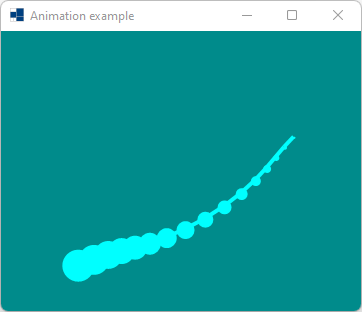
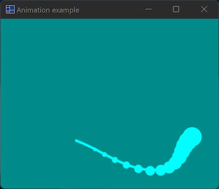
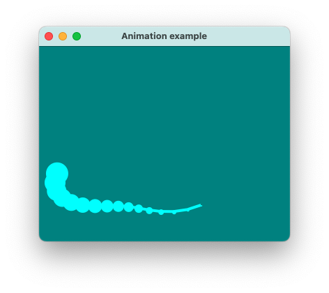
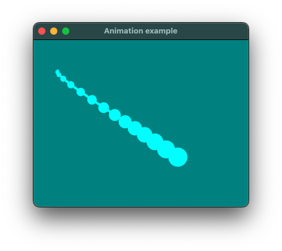
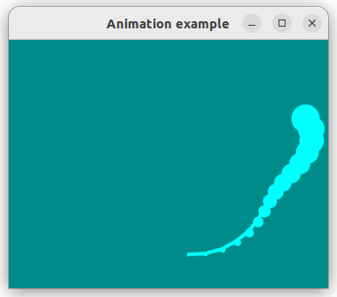
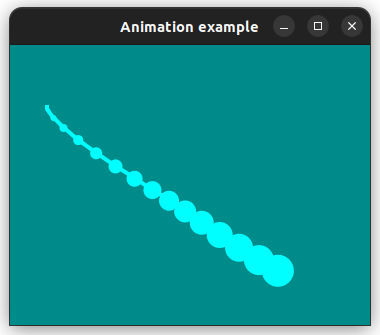

|
xtd
1.0.0
|
Loading...
Searching...
No Matches
animation.cpp
demonstrates the use of xtd::forms::animation control.
- Windows


- macOS


- Gnome


#include <xtd/xtd>
namespace animation_example {
class form1 : public form {
public:
form1() {
back_color(basic_colors::teal());
client_size({360, 280});
controls().add(fish_animation);
fore_color(basic_colors::aqua());
text("Animation example");
fish_animation.dock(dock_style::fill);
fish_animation.frames_per_second(60);
fish_animation.start();
fish_animation.click += [&] {fish_animation.running(!fish_animation.running());};
fish_animation.updated += [](object& sender, const animation_updated_event_args& e){diagnostics::debug::write_line(string::format("frame_counter={}, elapsed={}", e.frame_counter(), e.elapsed()));};
fish_animation.paint += [](object& sender, paint_event_args& e) {
e.graphics().clear(as<animation>(sender).back_color());
static const auto fish_length = 16;
auto points = list<point_f> {};
for (auto i = 0; i < fish_length; ++i) {
auto radius = 100.0 + 10.0 * math::sin(as<animation>(sender).frame_counter() * 0.1 + i * 0.5);
auto x = as<float>(e.clip_rectangle().width / 2.0 + 1.5 * radius * sin(as<animation>(sender).frame_counter() * 0.02 + i * 0.12));
auto y = as<float>(e.clip_rectangle().height / 2.0 + 1.0 * radius * math::cos(as<animation>(sender).frame_counter() * 0.04 + i * 0.12f));
e.graphics().fill_ellipse(solid_brush(as<animation>(sender).fore_color()), x - i, y - i, 2.0f + 2.0f * i, 2.0f + 2.0f * i);
points.add({x, y});
}
e.graphics().draw_lines(pen(as<animation>(sender).fore_color(), 4), points.to_array());
};
}
private:
animation fish_animation;
};
}
auto main() -> int {
//auto df = debug_form {};
//df.back_color(basic_colors::black());
//df.fore_color(basic_colors::lime());
application::run(animation_example::form1 {});
}
Generated on for xtd by Gammasoft. All rights reserved.